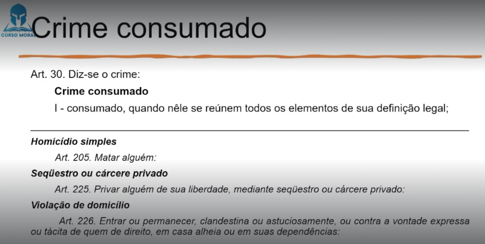
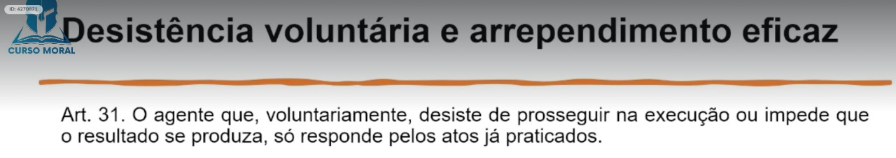
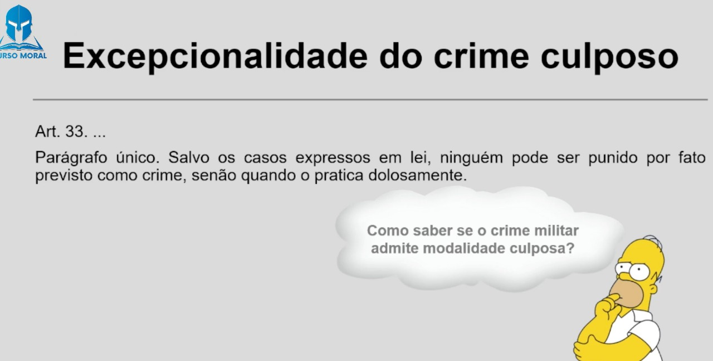
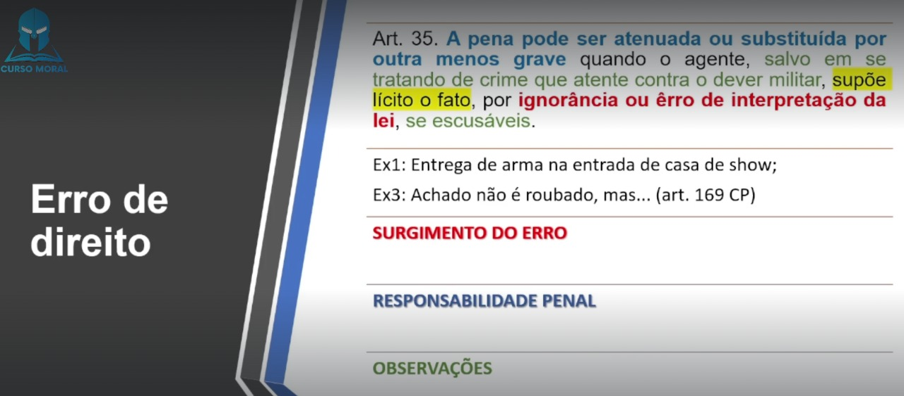
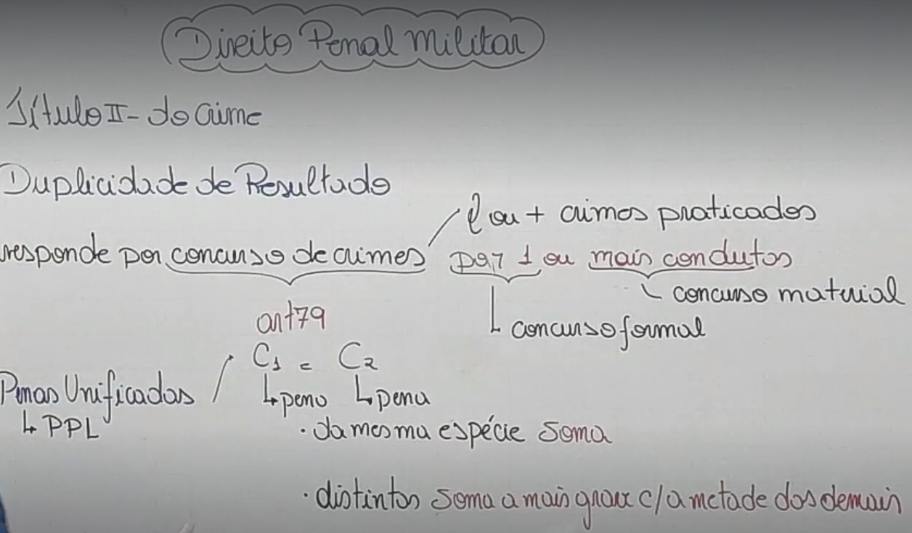
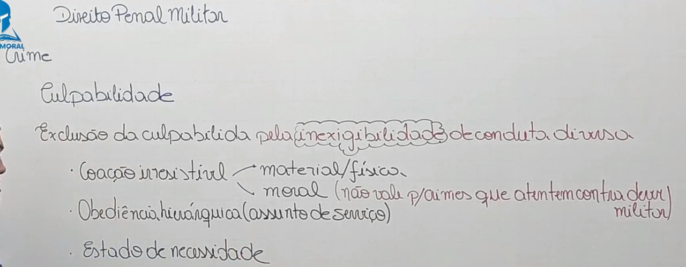

⚖ TÍTULO I - DA APLICAÇÃO DA LEI PENAL MILITAR (Art. 1º ao 28)
⚖ TÍTULO III - DA IMPUTABILIDADE PENAL (Art. 48 ao 52)
⚖ TÍTULO IV - DO CONCURSO DE AGENTES (Art. 53 e 54)
⚖ TÍTULO V - DAS PENAS (Art. 55 ao 109)
⚖ TÍTULO VI - DAS MEDIDAS DE SEGURANÇA (Art. 110 e 120)
⚖ TÍTULO VII - DA AÇÃO PENAL (Art. 110 e 120)
⚖ TÍTULO VIII - DA EXTINÇÃO DA PUNIBILIDADE (Art. 123 e 135)
⚖ PARTE ESPECIAL - LIVRO I
DOS CRIMES MILITARES EM TEMPO DE PAZ
TÍTULO I - DOS CRIMES CONTRA A SEGURANÇA EXTERNA DO PAÍS (Art. 136 e 148)
⚖ PARTE ESPECIAL - LIVRO I
DOS CRIMES MILITARES EM TEMPO DE PAZ
TÍTULO II
DOS CRIMES CONTRA A AUTORIDADE OU DISCIPLINA MILITAR
CAPÍTULO I - DO MOTIM E DA REVOLTA (Art. 149 e 153)
TÍTULO II
DO CRIME (Art. 29 ao 47)
🎥 08. Do Crime- Parte 1
O resultado de que depende a existência do crime somente é imputável a quem lhe deu causa. Considera-se causa a ação ou omissão sem a qual o resultado não teria ocorrido. (Art. 29 CPM)
Acontecimento jurídico que, em princípio, vem modificar ou alterar uma situação firmada em fato anterior, para que se possa tomar uma nova orientação ou para que se permita a adoção de medida que desfaça ato, ou medida anterior, ou que venha imprimir novo rumo à solução de uma contenda judicial.
A superveniência de causa relativamente independente exclui a imputação quando, por si só, produziu o resultado. Os fatos anteriores, imputam-se, entretanto, a quem os praticou.(Art. 29º, §1º)
A omissão é relevante como causa quando o omitente devia e podia agir para evitaro resultado. O dever de agir incumbe a:
📍 quem tenha por lei obrigação de cuidado, proteção ou vigilância;
📍 a quem, de outra forma, assumiu a responsabilidade de impedir o resultado;
📍 e a quem, com seu comportamento anterior, criou o risco de sua superveniência.
(Art. 29º, §2º)
A omissão será penalmente relevante quando houver uma lei que determine a prática de determinada ação em certo contexto e atribua a essa inatividade uma pena. Nesses casos, a omissão, que não consiste em apenas ficar parado, mas também em realizar qualquer outra conduta distinta daquela imposta pela norma, será típica sob um prisma objetivo, desde que possível a prática da conduta exigida pela lei.
Pode ser classificadas:
📍 como próprias: Quando se deixa de prestar assistência quando possível fazê-lo.
📍 e as imprórpias: é aquela por meio da qual se imputa um tipo penal comissivo (de ação) àquele que se omite, como se ele tivesse causado positivamente o resultado ou o risco previsto na norma.(Exemplo a mãe que por não cuidar de seu filho lhe causa a morte por desnutrição) (Art. 29º, §2º)

É uma expressão em latim que pode ser traduzida para “itinerário do crime” ou “caminho do crime”.
Só é verificado nos crimes dolosos, os quais possuem planejamento e vontade por parte do agente.
Enquanto nos crimes culposos ele não é possível porque ocorrem por imperícia, imprudência ou negligência.
📍 A Cogitação (Nessa etapa não é considerado crime)
📍 Os Atos preparatórios (Normalmente não é crime, mais pode ser considerado dependendo dos atos)
📍 Início dos atos de execução
📍 A Consumação (ou tentativa)
Quando nêle se reúnem todos os elementos de sua definição legal; (Art. 30, I)

🎥 09. Do Crime- Parte 2
Tentado, quando, iniciada a execução, não se consuma por circunstâncias alheias à vontade do agente.
Pena de tentativa: Parágrafo único. Pune-se a tentativa com a pena correspondente ao crime, diminuída de um a dois terços, podendo o juiz, no caso de excepcional gravidade, aplicar a pena do crime consumado
(Art. 30, II)
O agente que, voluntariamente, desiste de prosseguir na execução ou impede que o resultado se produza, só responde pelos atos já praticados.(Art. 31)


O arrependimento posterior é previsto no Código Penal da seguinte maneira:
📍 Art. 16 - Nos crimes cometidos sem violência ou grave ameaça à pessoa, reparado o dano ou restituída a coisa, até o recebimento da denúncia ou da queixa, por ato voluntário do agente, a pena será reduzida de um a dois terços.
Não tem previsão na parte geral.
📍 Art. 72. São circunstâncias que sempre atenuam a pena:
📍 III - ter o agente:
📍 b) procurado, por sua espontânea vontade e com eficiência, logo após o crime, evitar-lhe ou minorar-lhe as consequências, ou ter, antes do julgamento, reparado o dano;
📍 Art. 73. Quando a lei determina a agravação ou atenuação da pena sem mencionar o quantum, deve o juiz fixá-lo entre um quinto e um terço, guardados os limites da pena cominada ao crime.

Quando, por ineficácia absoluta do meio empregado ou por absoluta impropriedade do objeto, é impossível consumar-se o crime, nenhuma pena é aplicável.(Art. 32)


Ele tem 2 formas:
📍 I - doloso, quando o agente quis o resultado ou assumiu o risco de produzi-lo;
📍 II - culposo, quando o agente, deixando de empregar a cautela, atenção, ou diligência
ordinária, ou especial, a que estava obrigado em face das circunstâncias, não prevê o
resultado que podia prever ou, prevendo-o, supõe levianamente que não se realizaria ou
que poderia evitá-lo. (Art. 33)
Parágrafo único. Salvo os casos expressos em lei, ninguém pode ser punido por fato
previsto como crime, senão quando o pratica dolosamente. (Art. 33)



🎥 10. Do Crime- Parte 3
A pena pode ser atenuada ou substituída por outra menos grave quando o
agente, salvo em se tratando de crime que atente contra o dever militar, supõe lícito o fato, por ignorância ou erro de interpretação da lei, se escusáveis. (Art. 35)



É isento de pena quem, ao praticar o crime, supõe, por erro plenamente
escusável, a inexistência de circunstância de fato que o constitui ou a existência de
situação de fato que tornaria a ação legítima. (Art. 36)
💡 OBS: Erro de fato: Isenta de Pena
Erro de Direito: Atenua / substitui

Se o êrro deriva de culpa, a êste título responde o agente, se o fato é punível como
crime culposo. (Art. 36, §1º)
Se o êrro é provocado por terceiro, responderá êste pelo crime, a título de dolo ou
culpa, conforme o caso. (Art. 36, §2º)
🎥 11. Do Crime- Parte 4
Quando o agente, por êrro de percepção ou no uso dos meios de execução, ou
outro acidente, atinge uma pessoa em vez de outra, responde como se tivesse praticado o
crime contra aquela que realmente pretendia atingir. Devem ter-se em conta não as
condições e qualidades da vítima, mas as da outra pessoa, para configuração, qualificação
ou exclusão do crime, e agravação ou atenuação da pena(Art. 37)
💡 OBS: Crime Doloso
É o desvio no ataque, quanto à “pessoa-objeto” do crime em lugar de atingir a pessoa visada, o agente alcança pessoa diversa, porque a agressão esquivou-se do alvo original. Não se altera, no entanto, a denominação do crime pois a alteração da vítima não abala a natureza do fato.
Se, por êrro ou outro acidente na execução, é atingido bem jurídico diverso do
visado pelo agente, responde êste por culpa, se o fato é previsto como crime culposo.(Art. 37, §1º)
💡 OBS: Crime Culposo se houver
O resultado diverso do pretendido, conhecido como aberratio criminis ou aberratio delicti, espécie de crime aberrante, também ocorre no mecanismo de ação, na fase de execução do delito, quando o agente, pretendendo atingir um bem jurídico, atinge outro diverso.


Na aberratio ictus, se o sujeito quer lesar A e vem a ofender B, responde como se tivesse lesionado o primeiro; na aberratio criminis a solução é diferente, uma vez que a norma determina que o resultado diverso do pretendido seja punido a título de culpa.
Se, no caso do artigo, é também atingida a pessoa visada, ou, no caso do parágrafo
anterior, ocorre ainda o resultado pretendido, aplica-se a regra do art. 79.(Art. 37, §2º)
Quando o agente, mediante uma só ou mais de uma ação ou omissão, pratica dois ou mais crimes, idênticos ou não, as penas privativas de liberdade devem ser unificadas. Se as penas são da mesma espécie, a pena única é a soma de tôdas; se, de espécies diferentes, a pena única e a mais grave, mas com aumento correspondente à metade do tempo das menos graves, ressalvado o disposto no art. 58. (Art. 79)
O mínimo da pena de reclusão é de um ano, e o máximo de trinta anos; o
mínimo da pena de detenção é de trinta dias, e o máximo de dez anos.(Art. 58)
📍 Concurso formal: Um Conduta
📍 Concurso Material: Mais de uma conduta
O CPM não diferencia os concursos.

📍 Reclusão + Reclusão = Mesma Espécie
📍 Reclusão + detenção = Destintas
PPL = Pena Privativa de Liberdade
🎥 12. Do Crime- Parte 5
📌 Conduta: modo como um indivíduo ou grupo se comporta
📌 Resultado: é a modificação causada no mundo exterior pela conduta, como a perda patrimonial no furto, a morte no homicídio ou os traumas físicos na lesão corporal.
📌 Nexo Causal: é o vínculo fático que liga o efeito à causa, ou seja, é a comprovação de que houve dano efetivo, motivado por ação, voluntária, negligência ou imprudência daquele que causou o dano.
📌 Tipicidade: é a adequação de um fato cometido à descrição que dele se faz na lei penal.
Não há crime quando o agente pratica o fato:
📍 I - em estado de necessidade;
📍 II - em legítima defesa;
📍 III - em estrito cumprimento do dever legal;
📍 IV - em exercício regular de direito.
Parágrafo único. Não há igualmente crime quando o comandante de navio, aeronave
ou praça de guerra, na iminência de perigo ou grave calamidade, compele os subalternos,
por meios violentos, a executar serviços e manobras urgentes, para salvar a unidade ou
vidas, ou evitar o desânimo, o terror, a desordem, a rendição, a revolta ou o saque. (Art. 42)
💡 OBS: Diga para decorar
📍 L: legítima defesa
📍 E: estrito cumprimento do dever legal
📍 E: exercício regular de direito
📍 E: estado de necessidade


Entende-se em legítima defesa quem, usando moderadamente dos meios
necessários, repele injusta agressão, atual ou iminente, a direito seu ou de outrem.(Art.44)

Considera-se em estado de necessidade quem pratica o fato para preservar
direito seu ou alheio, de perigo certo e atual, que não provocou, nem podia de outro modo evitar, desde que o mal causado, por sua natureza e importância, é consideràvelmente inferior ao mal evitado, e o agente não era legalmente obrigado a arrostar o perigo. (Art. 43)
💡 OBS:
📍 Exclusão do Crime
📍 Mal causado não pode ser superior ao mal evitado
📍 Direito próprio oou alheio
Não é igualmente culpado quem, para proteger direito próprio ou de pessoa a quem está ligado por estreitas relações de parentesco ou afeição, contra perigo certo e atual, que não provocou, nem podia de outro modo evitar, sacrifica direito alheio, ainda quando superior ao direito protegido, desde que não lhe era razoàvelmente exigível conduta diversa.(Art. 39)
💡 OBS:
📍 Exclusão da Culpa
📍 Bem juridico preservado pode ser menor que o bem jurido afetado
📍 Direito próprio ou afiniade
📍 Imputabilidade
📍 Exigência de conduta diferente

🎥 13. Do Crime- Parte 6
📍 a) sob coação irresistível ou que lhe suprima a faculdade de agir segundo a própria
vontade;
📍 b) em estrita obediência a ordem direta de superior hierárquico, em matéria de serviços. (Assunto de Serviço)
📍 § 1° Responde pelo crime o autor da coação ou da ordem.
📍 § 2° Se a ordem do superior tem por objeto a prática de ato manifestamente criminoso, ou há excesso nos atos ou na forma da execução, é punível também o inferior. (art. 38)


Nos crimes em que há violação do dever militar, o agente não pode invocar
coação irresistível senão quando física ou material. (Art. 40)


O agente que, em qualquer dos casos de exclusão de crime, excede
culposamente os limites da necessidade, responde pelo fato, se êste é punível, a título de
culpa.(Art.45)
Não é punível o excesso quando resulta de escusável surprêsa ou
perturbação de ânimo, em face da situação.(Art.45, Parágrafo único)

O juiz pode atenuar a pena ainda quando punível o fato por excesso doloso.(Art.46)

Deixam de ser elementos constitutivos do crime:
📍 I - a qualidade de superior ou a de inferior, quando não conhecida do agente;
📍 II - a qualidade de superior ou a de inferior, a de oficial de dia, de serviço ou de quarto, ou a de sentinela, vigia, ou plantão, quando a ação é praticada em repulsa a agressão.(Art.47)

